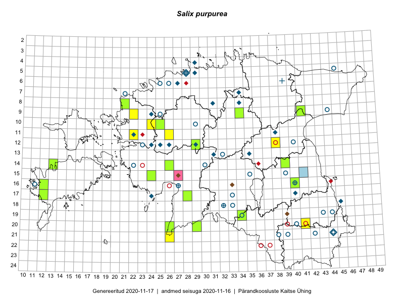

Salix purpurea — punapaju
Salicaceae :: Salix purpurea L. (134); Salix purpurea subsp. purpurea L. (3)

Kaart põhineb 142 kirjel:
vaatlusi 29
herbaareksemplare 108
PKÜ kirjeid1 4
ELFi kirjeid2 1
Taime kaasaegsed ja ajaloolised leiukohad asuvad 67 ruudus.
Tingmärgid ja leidudega ruutude arvud periooditi uues (u) ja 2005 andmestikus (v)
| █ | vahemik | u3 | v4 |
|---|---|---|---|
| █ | 2006–2020 | 24 | – |
| ◆/◇ | 1971–2005 | 19 | 12 |
| ○ | 1921–1970 | 29 | 26 |
| + | kuni 1920 | 5 | 1 |
| × | hävinud | – | 0 |
| ? | kaheldav | – | 0 |
| Ruut | Leidja(d) | Leiuaeg | Kirje |
|---|---|---|---|
| 10-24 | Peedu Saar | 2020-07-22 | punkt: Salix purpurea L. |
| 16-40 | Thea Kull | 2020-05-29–2020-07-03 | ruut/ala: Salix purpurea L. |
| 08-21 | Peedu Saar | 2019-09-03 | TAA0149697: Salix purpurea L. |
| 20-41 | Toomas Kukk, Indrek Tammekänd | 2019-07-09 | punkt: Salix purpurea L. |
| 17-12 | Mari Reitalu | 2018-09-19 | TAA0149973: Salix purpurea L. |
| 14-26 | Indrek Tammekänd | 2017-09-04 | TAA0143695: Salix purpurea L. |
| 12-29 | Indrek Tammekänd | 2017-08-09 | TAA0143442: Salix purpurea L. |
| 17-28 | Indrek Tammekänd | 2017-07-18 | TAA0143359: Salix purpurea L. |
| 14-13 | Toomas Kukk, Meeli Mesipuu, Mari Reitalu | 2016-10-06 | TAA0135702: Salix purpurea L. |
| 14-13 | Toomas Kukk, Meeli Mesipuu, Mari Reitalu | 2016-10-06 | TAA0135703: Salix purpurea L. |
| 20-26 | Indrek Tammekänd | 2016-08-17 | punkt: Salix purpurea L. |
| 20-26 | Indrek Tammekänd | 2016-08-17 | TAA0140029: Salix purpurea L. |
| 21-26 | Sirje Azarov, Indrek Tammekänd | 2016-07-18 | ruut/ala: Salix purpurea L. |
| 14-39 | Elle Rajandu, Karin Kikas | 2016-07-01 | TAA0143048: Salix purpurea L. |
| 14-39 | Elle Rajandu, Karin Kikas | 2016-07-01 | TAA0143049: Salix purpurea L. |
| 20-29 | Indrek Tammekänd | 2016-06-22 | TAA0139874: Salix purpurea L. |
| 09-41 | Rein Kalamees, Kersti Püssa | 2016-06-15 | TAA0138609: Salix purpurea L. |
| 10-25 | Peedu Saar | 2015-10-06 | TAA0116620: Salix purpurea subsp. purpurea L. |
| 11-22 | Tõnu Ploompuu | 2015-08-21–2015-08-23 | ruut/ala: Salix purpurea L. |
| 11-22 | Tõnu Ploompuu | 2015-08-21–2015-08-23 | punkt: Salix purpurea L. |
| 12-38 | Ulvi Selgis | 2015-08-21 | ruut/ala: Salix purpurea L. |
| 15-24 | Indrek Tammekänd | 2015-08-02 | TAA0136109: Salix purpurea L. |
| 11-26 | Hanna-Eliisa Luts, Tõnu Ploompuu | 2015-07-28 | ruut/ala: Salix purpurea L. |
| 11-26 | Hanna-Eliisa Luts, Tõnu Ploompuu | 2015-07-28 | punkt: Salix purpurea L. |
| 09-34 | Jana-Maria Habicht | 2015-07-26 | TAM0117577: Salix purpurea L. |
| 10-24 | Hanna-Eliisa Luts, Tõnu Ploompuu, Anna-Grete Rebane | 2015-07-19 | ruut/ala: Salix purpurea L. |
| 19-34 | Illi Tarmu | 2015-07-13 | TAA0136301: Salix purpurea L. |
| 19-34 | Silvia Pihu, Illi Tarmu | 2015-07-11 | punkt: Salix purpurea L. |
| 19-34 | Silvia Pihu, Illi Tarmu | 2015-07-11 | punkt: Salix purpurea L. |
| 12-29 | Toomas Kukk, Tiit Hallikma, Indrek Tammekänd | 2015-06-09 | TAA0135017: Salix purpurea L. |
| 12-29 | Toomas Kukk, Tiit Hallikma, Indrek Tammekänd | 2015-06-09 | TAA0135018: Salix purpurea L. |
| 12-29 | Toomas Kukk, Tiit Hallikma, Indrek Tammekänd | 2015-06-09 | TAA0135065: Salix purpurea L. |
| 12-29 | Tiit Hallikma, Indrek Tammekänd, Toomas Kukk | 2015-06-09 | ruut/ala: Salix purpurea L. |
| 12-29 | Tiit Hallikma, Indrek Tammekänd, Toomas Kukk | 2015-06-09 | punkt: Salix purpurea L. |
| 09-22 | Tõnu Ploompuu, Sirje Lagle | 2015-05-15 | punkt: Salix purpurea L. |
| 09-22 | Sirje Lagle, Tõnu Ploompuu | 2015-05-15 | ruut/ala: Salix purpurea L. |
| 15-41 | Eerik Leibak | 2011-09-07 | ELF: 23593 |
| 16-40 | Toomas Kukk | 2008-07-19 | TAA0101476: Salix purpurea L. |
| 15-27 | Jaan Liira | 2006-08-17 | PKÜ: 3399 |
| 19-39 | Malle Leht, Raivo Leht | 2002-08-13 | PKÜ: 9649 |
| 16-33 | Kai Vellak, Ain Vellak | 2000-11-12 | PKÜ: 3370 |
| 05-28 | H. Aasamaa | 2000-08-20 | TAM0128388: Salix purpurea L. |
| 05-28 | H. Aasamaa | 2000-08-20 | TAM0128389: Salix purpurea L. |
| 05-28 | H. Aasamaa | 2000-08-20 | TAM0128390: Salix purpurea L. |
| 05-28 | H. Aasamaa | 2000-08-20 | TAM0128391: Salix purpurea L. |
| 05-28 | H. Aasamaa | 2000-08-20 | TAM0128392: Salix purpurea L. |
| 15-27 | Jaan Liira | 2000-08-05 | PKÜ: 3398 |
| 07-34 | Ülle Kukk | 1999-06-20–1999-06-21 | ruut/ala: Salix purpurea L. |
| 13-31 | Toomas Kukk, Tõnu Ploompuu, Ülle Reier | 1999-05-28–1999-05-30 | ruut/ala: Salix purpurea L. |
| 07-34 | Olev Abner | 1997-09-04 | TALL A008997: Salix purpurea L. |
| 21-44 | Jaak Sultson | 1996-09-19 | TALL A010043: Salix purpurea L. |
| 21-44 | Jaak Sultson | 1996-08-19 | TALL A010045: Salix purpurea L. |
| 05-29 | Toomas Kukk | 1992-08-04 | TAA0100123: Salix purpurea L. |
| 08-31 | H. Aasamaa | 1992-07-22 | TAM0055941: Salix purpurea L. |
| 04-29 | Toomas Kukk | 1990-08-23 | TAA0100122: Salix purpurea L. |
| 08-31 | H. Aasamaa | 1990-07-06 | TAM0055942: Salix purpurea L. |
| 08-31 | H. Aasamaa | 1990-07-06 | TAM0055945: Salix purpurea L. |
| 13-35 | H. Krall | 1989-10-24 | ruut/ala: Salix purpurea L. |
| 08-31 | H. Aasamaa | 1988-08-25 | TAM0055943: Salix purpurea L. |
| 08-31 | H. Aasamaa | 1988-08-25 | TAM0055944: Salix purpurea L. |
| 08-31 | H. Aasamaa | 1988-08-25 | TAM0055946: Salix purpurea L. |
| 17-24 | Ülo Niinemets, Toomas Kukk | 1987-06-20 | ruut/ala: Salix purpurea L. |
| 06-27 | Toomas Kukk | 1986-08-23 | TAA0100124: Salix purpurea L. |
| 12-25 | V. Kuusk, L. Viljasoo | 1986-07-24 | ruut/ala: Salix purpurea L. |
| 11-38 | M. Kask, H. Krall, M. Leht, M. Abakumova, T. Kull | 1985-06-11–1985-06-15 | ruut/ala: Salix purpurea L. |
| 13-31 | Linda Viljasoo, Malle Leht, Tiiu Kull | 1984-07-21 | ruut/ala: Salix purpurea L. |
| 08-34 | Vilma Kuusk, Nele Ingerpuu | 1984-07-20 | ruut/ala: Salix purpurea L. |
| 07-34 | Heljo Krall, Maria Abakumova | 1984-07-20 | ruut/ala: Salix purpurea L. |
| 11-22 | Heljo Krall | 1983-07-14 | TAA0100121: Salix purpurea L. |
| 11-22 | botaaniline ekspeditsioon ZBI | 1983-07-07 | ruut/ala: Salix purpurea L. |
| 05-29 | Maret Kask | 1979-07 | ruut/ala: Salix purpurea L. |
| 18-45 | Linda Viljasoo | 1975-09-11 | TAA0100153: Salix purpurea L. |
| 17-40 | Maret Kask, Linda Viljasoo | 1971-07–1985-09 | ruut/ala: Salix purpurea L. |
| 15-35 | H. Aasamaa | 1967-09-12 | TAM0055939: Salix purpurea L. |
| 12-40 | M. Kask | 1967-06-05 | TAA0100125: Salix purpurea L. |
| 13-32 | Alma Saare, Silvia Talts | 1965-07-02 | TAA0100133: Salix purpurea L. |
| 14-30 | M. Kask | 1965-06-17 | TAA0100132: Salix purpurea L. |
| 16-40 | M. Kask | 1965-05-20 | TAA0100187: Salix purpurea L. |
| 10-29 | M. Kask | 1964-06-20 | TAA0100117: Salix purpurea L. |
| 12-23 | Silvia Talts | 1963-08-04 | TAA0100157: Salix purpurea L. |
| 09-44 | M. Kask | 1963-06-28 | TAA0100140: Salix purpurea L. |
| 05-45 | Vilma Kuusk, S. Pärn | 1961-06-14 | TAA0100180: Salix purpurea L. |
| 14-22 | H. Karu | 1960-08-11 | TAA0100154: Salix purpurea L. |
| 06-25 | A. Üksip, Linda Viljasoo | 1960-08-08 | TAA0100126: Salix purpurea L. |
| 06-25 | A. Üksip, Linda Viljasoo | 1960-08-08 | TAA0100127: Salix purpurea L. |
| 19-43 | K. Pork | 1960-08-06 | TAA0100141: Salix purpurea L. |
| 19-43 | K. Pork | 1960-08-06 | TAA0100142: Salix purpurea L. |
| 09-25 | Agnes Ojaveer, Taimi Piin, S. Pärn | 1960-08-05 | TAA0100159: Salix purpurea L. |
| 06-26 | Taimi Piin, H. Ting, Ella Tammemägi | 1960-08-03 | TAA0100188: Salix purpurea L. |
| 06-26 | Taimi Piin, H. Ting, Ella Tammemägi | 1960-08-03 | TAA0100189: Salix purpurea L. |
| 07-21 | M. Kask | 1960-07-13 | TAA0100135: Salix purpurea L. |
| 20-40 | M. Kask | 1960-06-21 | TAA0100170: Salix purpurea L. |
| 16-40 | Linda Viljasoo, H. Karu | 1960-05-25 | TAA0100181: Salix purpurea L. |
| 21-44 | H. Karu, Linda Viljasoo | 1960-05-20 | TAA0100160: Salix purpurea L. |
| 21-44 | H. Karu, Linda Viljasoo | 1960-05-20 | TAA0100161: Salix purpurea L. |
| 21-44 | 1960-05-20 | TAA0100171: Salix purpurea L. | |
| 16-27 | H. Karu, Linda Viljasoo | 1960-05-13 | TAA0100172: Salix purpurea L. |
| 16-40 | Linda Viljasoo, H. Karu | 1960-05-10 | TAA0100118: Salix purpurea L. |
| 16-40 | Linda Viljasoo | 1960-05-10 | TAA0100168: Salix purpurea L. |
| 05-45 | Linda Viljasoo, H. Karu | 1959-10-08 | TAA0100128: Salix purpurea L. |
| 05-45 | H. Karu, Linda Viljasoo | 1959-10-08 | TAA0100120: Salix purpurea L. |
| 21-44 | H. Karu | 1959-10-04 | TAA0100144: Salix purpurea L. |
| 21-44 | H. Karu | 1959-10-04 | TAA0100145: Salix purpurea L. |
| 21-44 | H. Karu | 1959-10-04 | TAA0100146: Salix purpurea L. |
| 21-44 | H. Karu | 1959-10-04 | TAA0100147: Salix purpurea L. |
| 21-44 | H. Karu | 1959-10-04 | TAA0100148: Salix purpurea L. |
| 21-44 | H. Karu | 1959-10-04 | TAA0100149: Salix purpurea L. |
| 21-44 | H. Karu | 1959-10-04 | TAA0100150: Salix purpurea L. |
| 21-44 | H. Karu | 1959-10-04 | TAA0100151: Salix purpurea L. |
| 21-44 | H. Karu | 1959-10-04 | TAA0100152: Salix purpurea L. |
| 17-33 | H. Karu | 1959-08-13 | TAA0100129: Salix purpurea L. |
| 18-33 | Linda Viljasoo | 1959-08-10 | TAA0100130: Salix purpurea L. |
| 18-33 | Linda Viljasoo | 1959-08-10 | TAA0100131: Salix purpurea L. |
| 16-27 | A. Rasins | 1959-07-22 | TAA0100158: Salix purpurea L. |
| 18-32 | J. Kaasik, Valli Porgasaar | 1959-06-07 | TAA0100183: Salix purpurea L. |
| 19-34 | Linda Viljasoo | 1959-06-05 | TAA0100167: Salix purpurea L. |
| 19-34 | Linda Viljasoo | 1959-06-05 | TAA0100184: Salix purpurea L. |
| 15-39 | Linda Viljasoo, H. Karu | 1959-05-29 | TAA0100175: Salix purpurea L. |
| 21-44 | Linda Viljasoo | 1959-05-06 | TAA0100178: Salix purpurea L. |
| 21-44 | Linda Viljasoo | 1959-05-06 | TAA0100179: Salix purpurea L. |
| 21-38 | H. Karu | 1958-06-07 | TAA0100139: Salix purpurea L. |
| 16-40 | Linda Viljasoo | 1958-06-06 | TAA0100136: Salix purpurea L. |
| 19-44 | Linda Viljasoo, H. Karu | 1957-06-30 | TAA0100182: Salix purpurea L. |
| 19-44 | Linda Viljasoo | 1957-06-30 | TAA0100163: Salix purpurea L. |
| 19-44 | Linda Viljasoo, Alma Saare | 1957-05-13 | TAA0100162: Salix purpurea L. |
| 19-44 | Linda Viljasoo, Alma Saare | 1957-05-13 | TAA0100166: Salix purpurea L. |
| 16-11 | Aleksei Paivel | 1954 | TALL A006739: Salix purpurea L. |
| 05-28 | H. Aasamaa | 1938-08-30 | TAM0128387: Salix purpurea L. |
| 16-40 | H. Salasoo | 1933-07-28 | TAM0029924: Salix purpurea subsp. purpurea L. |
| 05-28 | Jaak Ruubel | 1933-06-09 | TAM0129677: Salix purpurea L. |
| 12-23 | Erik Sits | 1930-07-20 | TAM0029925: Salix purpurea subsp. purpurea L. |
| 05-28 | Jaak Ruubel | 1929-09-29 | TAM0129676: Salix purpurea L. |
| 21-39 | E. Lukats | 1922-07-07 | TU268422: Salix purpurea L. |
| 21-42 | H. Hiir | 1921-05 | TU268417: Salix purpurea L. |
| 06-39 | R. Wiren | 1920-05-22 | TU268419: Salix purpurea L. |
| 06-39 | R. Wiren | 1920-05-22 | TU268420: Salix purpurea L. |
| 05-28 | Joh. Aidas | 1906-05-15 | TU268416: Salix purpurea L. |
| 18-32 | H. Hiir | 1890-06 | TU268418: Salix purpurea L. |
| 16-27 | K. Krumins | 1887-05-19 | TU268424: Salix purpurea L. |
| 16-40 | 1859 | TU268423: Salix purpurea L. | |
| 16-40 | Sengbusch | TAM0120421: Salix purpurea L. | |
| 16-40 | P. Glehn | TAM0120422: Salix purpurea L. |
Pärandkoosluste Kaitse Ühingu (PKÜ) andmebaas sisaldab inventeeritud koosluste kirjeldusi ja liigiloendeid. Kõige enam on andmeid niidutaimede kohta.↩︎
Eestimaa Looduse Fondi (ELF) andmebaas sisaldab inventeeritud koosluste kirjeldusi ja liigiloendeid. Eriti rohkesti on andmeid märgalade kohta.↩︎
Ruutude arv uue atlase andmekogu järgi. Muuhulgas arvestab vanemat herbaariumi, 2005. aasta atlase välitöölehtedelt uuesti digitaliseeritud andmeid jne. Uue atlase andmekogust pärinevad andmed on kaardile kantud siniste sümbolitega.↩︎
Ruutude arv 2005. aasta atlase (Kukk, T., Kull, T., Eesti taimede levikuatlas. Eesti Maaülikool, Põllumajandus- ja Keskkonnainstituut, Tartu, 2005) järgi. Andmeallikana on kasutatud levik.exe programmi, kus igas ruudus on registreeritud vaid uusim leid. Seetõttu on vanemate perioodide kohta andmed puudulikud. Kasutatud levik.exe andmestikus leidub mõningaid kõrvalekaldeid atlase trükis ilmunud versioonist, sagedamini tarnade ja käpaliste seas. Lisaks leidub selles andmestikus valik liike (peamiselt väheste leidudega tulnuktaimed), mille kaarte trükis ei avaldatud. Vana atlase andmed ruutudest, milles ei ole uue atlase andmekogus leide enne 2006. aastat, on kaardil esitatud punaste sümbolitega. Vana atlase andmetel hävinud ja kaheldavaid leiukohti pole hilisemate (taas)leidude põhjal korrigeeritud.↩︎